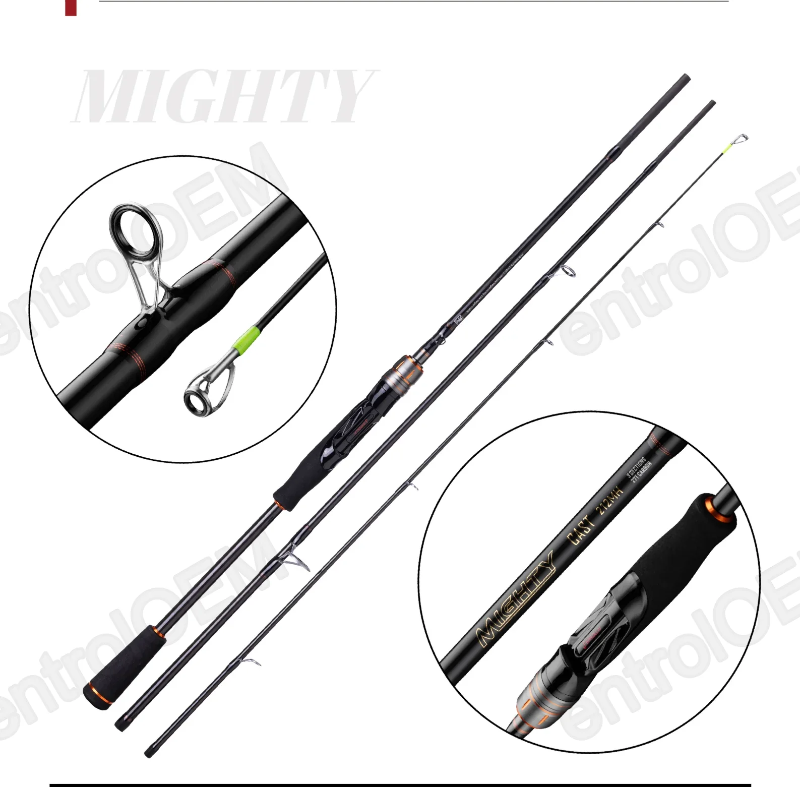

Fishing Rod Categories Explained: Lure, Sea, Rock, Boat, Carp and Telescopic

Rod categories are really just shorthand for a fishing method. Once you know the method, the length, action, reel and line follow logically. This guide maps the main rod families so you can read any catalogue without guessing.
Categories follow the fishing method, not the material
Suppliers group rods by how they are used: the water, the target species, the lure or bait and the way the rod is fished. Material and construction describe how a rod is built, not what it is for. A single carbon blank can become a lure rod, a boat rod or a carp rod once the length, action, guides, reel seat and handle are specified for that job. Start with the method and the rest follows.
Lure rods (spinning and casting)
Lure rods are built to cast and work artificial lures. They are usually light to medium in power, with a fast or moderate-fast action that gives tip sensitivity and a crisp hook set. Spinning versions use a screw-down reel seat and a split grip; casting versions use a trigger seat and a full-length grip. Lengths for general freshwater and light inshore work commonly fall between 2.1 and 2.4 m. Pair them with a spinning or baitcasting reel sized to the line class, and a braided main line when sensitivity and casting distance matter.
Sea and inshore rods
Sea rods cover a broad range from light shore fishing for bream and flathead to heavier inshore work. They are defined by corrosion-resistant guides and reel seats, and by a power and length matched to the shore or estuary conditions. Inshore spinning rods are often longer and a little stronger than their freshwater counterparts to handle wind, current and saltwater species. Use a reel with confirmed corrosion resistance and rinse it after every session.
Rock fishing rods
Rock fishing means casting from rocks, ledges and broken ground, often with long Shiner or float rigs and light lines. Rods for this work are typically long, around 4.5 m and above, with a moderate action that absorbs shock and protects light tackle when a fish runs. The long length helps control line over uneven ground and gives a soft landing. Pair with a mid-size spinning reel carrying a fine main line and a leader suited to the species.
Boat and offshore rods
Boat rods are built for vertical and semi-vertical fishing, drifting, slow jigging and heavier offshore work. The rod is shorter than a shore rod because casting distance is less important; what matters is power, backbone and a reel seat strong enough for a large reel. Actions are chosen for feeling the bottom or working a jig rather than for long casting. Match them to a reel whose drag and line capacity suit the depth, current and target species.
Carp rods
Carp rods are long, traditionally 9 to 12 ft, and are specified by test curve rather than by lure weight. A test curve describes how far the blank bends under a static load; it is not a lifting or dead-lift rating and should not be read as one. Carp fishing uses heavy main line or braid with a leader, a large-spool reel and a rod with enough backbone to control a powerful fish at distance. If a landing-weight requirement matters, state it separately from the test curve.
Fly rods
Fly rods are built to cast a weighted line rather than a weighted lure, so they are specified by line weight and length instead of lure rating. They are usually long and light with a fast recovery, paired with a fly reel carrying matching line and backing. Fly fishing is a distinct discipline: a lure-rod specification cannot be translated into a fly-rod specification by changing one number.
Telescopic rods
Telescopic rods collapse into their own handles, which makes them easy to transport and store. The trade-off is that each section adds a joint, and more joints generally mean more weight and a less pure action than a comparable multi-piece rod of the same length. They are popular for travel, casual freshwater and light shore use. When comparing a telescopic rod with a conventional one, compare finished weight, collapsed length and the number of sections, not just the extended length.
How to choose the reel and line for each family
A simple rule keeps the outfit coherent: the reel size follows the rod power and line class, and the line follows the target species and method. Light lure work uses a small spinning or baitcasting reel with fine braid. Rock fishing uses a mid-size spinning reel with light line and a leader. Boat and offshore work uses a larger reel with capacity and drag suited to the depth and fish. Carp uses a big-spool reel with a line chosen for the water and obstacle cover. Every category has exceptions, so confirm the specific reel seat and line rating on the rod you are buying.
Turn the research into a specification
If you are building a range under your own brand, we can help turn these choices into a repeatable rod and reel specification. Send us your target species, water type and quantities and we will come back with options.